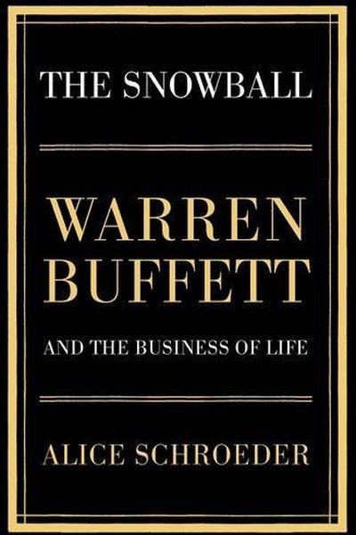

Library › Money & Finance
The Snowball: Warren Buffett and the Business of Life — Summary & Key Lessons

The authorized biography of Warren Buffett — the only one he cooperated with, and the story of how a life compounds.
📖 OPEN THE FULL INTERACTIVE BREAKDOWN →🌐 Read it in Hindi, Hinglish, Gujarati, Tamil & 22 more languages — free, with audio.
💡 The Big Idea
Alice Schroeder spent 2,000 hours with Warren Buffett to write the definitive biography of the world's greatest investor. The snowball metaphor is Buffett's own: 'Life is like a snowball. The important thing is finding wet snow and a really long hill.' The book is the story of how a child with a paper route and a head for numbers compounded into $60+ billion — and of the inner life behind the legend: his mind, his relationships, his contradictions, and his obsession with the two things he says matter most: rationality and reputation.
🧠 The 6 Key Lessons
Lesson 1: Compounding: The Snowball Starts Small
The Snowball
Buffett's defining insight: wealth — like snow — grows by compounding, and the two requirements are wet snow (good returns) and a long hill (time). He started at 6, buying six-packs of Coke for 25¢ and selling them for 30¢; by 11 he was filing taxes; by 16 he'd made $53,000 in today's money from pinball machines. The snowball's power: he never stopped rolling, for 80 years.
📖 Example: The book's math is famous: Buffett made 99% of his fortune after his 50th birthday — because compounding needs a long hill, not a fast start. His edge was never a single brilliant bet; it was decades of never stopping. Read the full example →
⚡ Do this: Start your snowball this month — any size. The hill matters more than the snow: automate investing so it rolls monthly without your attention.
Lesson 2: The Margin of Safety: Price vs. Value
The Education of Warren Buffett
From Benjamin Graham, Buffett learned the core discipline: a stock is a piece of a business, and you only buy when the price is well below your estimate of its value — the 'margin of safety.' The gap protects you from being wrong, and being wrong is guaranteed sometimes. 'Price is what you pay; value is what you get.'
📖 Example: Buffett's early partnership returns came from 'cigar butt' stocks — companies priced below their cash value. Later he refined Graham's method (quality matters too) but never dropped the margin: he still refuses to overpay, which is why he sat on cash through… Read the full example →
⚡ Do this: Before any investment, write your value estimate and your buy price. If the current price isn't at least 20–30% below value, pass — the margin is the protection.
Lesson 3: Circle of Competence: Know What You Don't Know
The Circle of Competence
Buffett's rule: invest only in businesses you can understand — within your 'circle of competence.' He skipped tech for decades not because he was wrong about technology, but because he couldn't value it; when he finally bought Apple, it was as a consumer brand, a business he understood. The size of the circle doesn't matter — knowing its edge does.
📖 Example: Buffett famously avoided the dot-com boom ('I don't know how to value these') and was mocked for it — then the boom collapsed and his patience looked like genius. His fortune came from insurance, banks, consumer goods: businesses he could value with his eyes… Read the full example →
⚡ Do this: Draw your circle of competence: list 5 businesses or industries you deeply understand. Invest only there — and write down, for each idea outside the circle, why you're passing.
Lesson 4: Reputation: The 20-Year Asset
The Business of Life
Buffett's most quoted rule: 'It takes 20 years to build a reputation and five minutes to ruin it.' The book shows how his word became his most valuable asset — deals came to him because people trusted him; banks lent to him because his signature was known. Integrity, he says, is like oxygen: invisible when present, catastrophic when absent.
📖 Example: During the 2008 crisis, Buffett's $5 billion Goldman Sachs deal was done on a handshake — no army of lawyers — because his reputation preceded him. The book argues this trust was worth more to his empire than any single investment. Read the full example →
⚡ Do this: Audit your reputation today: what would people say about you when you're not there? Pick one promise you've been 'meaning to' keep and keep it this week — reputation is built in inches.
Lesson 5: The Inner Scorecard: Judge Yourself, Not the Crowd
The Inner Scorecard
Buffett's father taught him the inner scorecard: judge yourself by your own standards, not the world's applause. This is why he lives in the same modest Omaha house bought in 1958, drives his own car, and ignores the fashion of markets. The inner scorecard protects rationality — you can't be swayed by the crowd's panic or euphoria if you're not playing for the crowd.
📖 Example: The book contrasts Buffett with hedge-fund peers who chased rankings and glory — and made worse decisions. Buffett's refusal to follow the crowd through every boom and bust is the quiet engine of his 20%+ annual average. Read the full example →
⚡ Do this: Write your inner scorecard: the 5 standards you judge yourself by (not your job title or bank balance). Review your last decision against YOUR standards, not the crowd's.
Lesson 6: The Snowball Effect: Compounding Is the Eighth Wonder
The Snowball
Schroeder's biography reveals Buffett's true edge: he started investing at eleven and never stopped, letting compounding work over eight decades. His other advantage was temperament — patient, unemotional, willing to hold good businesses through noise. The snowball grows not from the biggest pushes but from the longest run and the right snow.
📖 Example: Buffett's fortune grew exponentially in his later decades because the base had compounded so long — most of his wealth came after age 60. The lesson is not 'be brilliant' but 'start early, stay consistent, and don't interrupt the compounding'. Read the full example →
⚡ Do this: Start or increase one compounding habit this month — investing, learning or fitness — and commit to never interrupting it.
✅ 5-Step Action Plan
- Start your snowball — automate investing so it rolls monthly.
- Write value vs. price for your next investment; demand a margin of safety.
- Draw your circle of competence; invest only inside it.
- Keep one promise this week — reputation is built in inches.
- Write your 5-point inner scorecard and judge by it.
⚠️ When This Doesn't Work
Schroeder's Buffett biography is the greatest finance story ever told — and Credit Suisse is the reminder that the snowball can roll downhill: the 167-year-old bank that once exemplified Buffett's principles — discipline, patience, reputation — slowly became the opposite, and the $17 billion in losses and a shotgun merger were the cost of abandoning the snowball's laws. The book makes Buffett look inevitable; the graveyard is full of banks that had his advantages and his reputation and lost both. The snowball works — as long as you never stop rolling it uphill.
💀 The Graveyard Proves It
🇨🇭 Credit Suisse — 167 Years of Prestige, Death by a Thousand Scandals. Burn: Sold for $3.2B — once worth $90B+. Read the full case study →
💬 Best Quotes from The Snowball: Warren Buffett and the Business of Life
- “Life is like a snowball. The important thing is finding wet snow and a really long hill.”
- “It takes 20 years to build a reputation and five minutes to ruin it. If you think about that, you'll do things differently.”
- “Price is what you pay. Value is what you get.”
Interactive version: mark lessons as read, listen in your language, share quote cards.